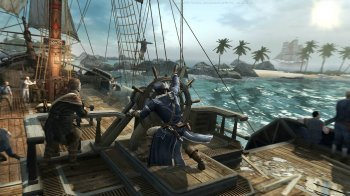
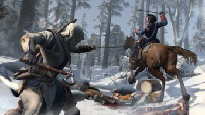
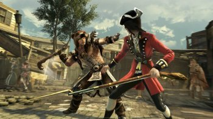

Мальчик родился 4 апреля 1756 года в Америке в поселении индейцев могавков.
После рождения мать Гадзидзио назвала его Радунхагейду. Отцом мальчика был британец
Хэйтем КенуэйОн рос в поселении в окружении друзей, пока однажды, в 1760 году, на них
не напали тамплиеры. Поселение было сожжено, а мать мальчика погибла в огне.
В 14 лет, мальчику показали Хрустальный шар, который скрывали и охраняли индейцы.
Дотронувшись до него, Радунхагейду услышал голос Юноны – представительницы Первой
Цивилизации. Она рассказала ему о планах тамплиеров захватить мир и необходимости найти
учителя. В своем видении Радунхагейду увидел и знак ассасинов.
Покинув долину, юноша отправился в усадьбу Ахиллеса Дэвенпорта, который должен
был научить его путям ассасина. Пожилой мастер, рассказал Радунхагейду все об тамплиерах
и ассасинах, начав тренировать из него убийцу.
В 1770 году, Ахиллес взял Радунхагейду с собой в Бостон. Наставник дал индейцу новое имя
Коннор (в честь сына погибшего годы назад), так как индейцев больно не любили. Юноша впервые
побывал в большом городе, который потряс его обилием запахов и звуков.
В городе, Коннор стал свидетелем заговора тамплиеров, которые хотели развязать войну Америки
и Британии. Он увидел как зародилась революция, когда солдаты начали расстреливать мирных жителей.
Среди тамплиеров Коннор увидел и своего отца Хэйтема, который приказал схватить ассасина.
После побега от солдат и своего первого испытания, герой получил от Ахиллеса скрытый клинок.
Последующие годы обучения Коннора, прошли в помощи невинным людям, которым он предлагал
поселиться у поместья учителя. Так вокруг поместья Дэвенпорта образовалась небольшая община.
По мимо этого Коннор взялся за восстановление судна “Аквила” севшего на мель. После
восстановления, герой научился ходить под парусом и стрелять из пушек.
На 1773 год Радунхагейду уже был членом клуба Кулачных боев, Охотничьего общества, Гильдии
воров. На своем судне он уничтожил не один тамплиерский корабль и форт. 16 декабря Коннор
принял участие в уничтожении груза чая, которое вошло в историю как – Бостонское чаепитие.
В 1775 году ассасин присоединился к Континентальной армии под предводительством Джорджа
Вашингтона, для войны за независимость Америки.
С 1776-го года Коннор занимался заговором тамплиеров, которые хотели убить Вашингтона.
В итоге, индеец сам был обвинен в попытке убийства лидера, подставленный генералом Континентальной
армии и тамплиером Чарльзом Ли. Он был приговорен к повешению. Но от петли его спасла команда
подготовленные им ассасинов. Предотвратив убийство Вашингтона, герой был оправдан, после чего
посетил подписание Декларации независимости.
Радунхагейду продолжил бороться с тамплиерами и британцами, рекрутируя новых убийц и уничтожая
вражеские корабли и капитанов.
В 1777 году, Коннор отправился на поиски сокровищ Уильяма Кидда. На острове Оук, герой нашел
кольцо Эдема, которое могло отталкивать металлические предметы.
Некоторое время Коннор работал со своим отцом и даже хотел объединить ордена Тамплиеров и Ассасинов.
Вскоре Радунхагейду узнал, что Джордж Вашингтон был повинен в смерти его матери, так как именно
он подписал бумаги на уничтожение племени. Разорвав все отношения с Вашингтоном и отцом, он отправился
в родное поселение, которое вновь было под угрозой. Что бы предотвратить войну могавков с патриотами,
Коннору пришлось убить своего старого друга Ганадогона, которому заморочил голову Чарльз Ли. После
этого, герой решил найти и убить тамплиера.
В 1781 году, его учитель Ахиллес умер, завещав все имущество Кенуэю, а при штурме Форт Джордж, Коннору
пришлось убить своего отца Хэйтема.
После смерти отца, главой ордена Тамплиеров стал Ли. В 1782 году, Коннор напал на его след. Преследуя
раненого врага, ассасин нашел его выпивающим в баре, после чего убил, забрав медальон к Великому Храму.
Коннор вернулся в родную деревню, обнаружив что его племя ушло на запад. Ассасин вновь дотронулся до
Хрустального Шара, представ перед Юноной. Женщина посоветовала спрятать амулет, который он снял с
убитого Ли, после чего Шар рассыпался в прах. Миссия Радунхагейду была исполнена. Его война подошла к концу.
В 1783 году война за независимость Америки была выиграна. Коннор был часть этой победы, так как
приложил не малые усилия, не дав победить британцам.
Год выпуска: 2012
Жанр: Action, 3D, 3rd Person
Разработчик: Ubisoft
Издательство: Акелла
Версия игры: 1.05
Тип издания: Лицензия
Язык интерфейса: Русский / Английский
Язык озвучки: Русский / Английский
Таблетка: Присутствует (THETA)
В третьей части экшна мы попадаем в северную Америку времен Великой Революции. Война за
независимость в самом разгаре и нам нужно сделать все, чтобы коварные южане не добились
успеха. Беда в том, что конфедератам начали помогать тамплиеры. А это очень нехорошо. Главный
герой – метис по имени Коннор. Он – результат смешанного брака индианки и европейца. Отлично
владеет как топорами, томагавками и кинжалами, так и пистолетами. Сия смесь оружия играет
положительную роль. Теперь выполнять квесты намного проще. Однако действовать в условиях войны
не так-то просто. Нашему ассассину придется попотеть для того, чтобы помочь Северу победить.
Графика и физика в игре как всегда на высоте. Все персонажи детально прорисованы, двигаются
так, как положено. Однако управлять нашим героем иногда трудновато. Но что сделать? В этом
весь «Assassin’s Creed». Игра будет интересна всем. Кроме интересного сюжета есть еще уникальная
возможность проникнуть в то время и лично пообщаться с Франклином и Джефферсоном.
Системные требования:
v Операционная система: Windows Vista, 7
v Процессор: Intel Core2 Duo E6700 2.66 ГГц / AMD Athlon 64 X2 6000+
v Оперативная память: 2 Гб (Vista / 7)
v Видеокарта: Nvidia Geforce 8800 или Radeon HD3850
v Звуковая карта: Совместимая с DirectX 9.0c
v Свободное место на жёстком диске: 17 Гб
Особенности игры:
В третьей части экшна мы попадаем в северную Америку времен Великой Революции.
Война за независимость в самом разгаре и нам нужно сделать все, чтобы коварные южане
не добились успеха. Беда в том, что конфедератам начали помогать тамплиеры. А это очень
нехорошо. Главный герой – метис по имени Коннор.
Он – результат смешанного брака индианки
и европейца. Отлично владеет как топорами, томагавками и кинжалами, так и пистолетами.
Сия
смесь оружия играет положительную роль. Теперь выполнять квесты намного проще. Однако действовать
в условиях войны не так-то просто.
Нашему ассассину придется попотеть для того, чтобы помочь Северу победить.
Графика и физика в игре как всегда на высоте. Все персонажи детально прорисованы, двигаются так,
как положено. Однако управлять нашим героем иногда трудновато.
Но что сделать? В этом весь
«Assassin’s Creed». Игра будет интересна всем. Кроме интересного сюжета есть еще уникальная возможность
проникнуть в то время и лично пообщаться с Франклином и Джефферсоном.
Героями рождаются.
Коннор — ассасин-полукровка — в бою полагается на врожденные инстинкты, а также
арсенал разнообразного оружия, в котором томагавки и дротики соседствуют с пистолетами и прочими
смертоносными приспособлениями представленной эпохи.
Из искры возгорится пламя.
Станьте мастером-ассасином и вступите в извечное противостояние ассасинов
и тамплиеров, с новой силой разгоревшееся на фоне кровопролитной революции.
Вам предстоит пройти путь
от Лексингтона до Банкер-Хилл и лично встретиться с такими легендарными людьми, как Джордж Вашингтон
или Бенджамин Франклин.
Раздвигая границы.
Преследуйте врагов, прокладывая путь по улицам городов и полям сражений к дальним
фронтирам Америки.
Новые технологии. Assassin’s Creed III дебют новейшего движка Anvil Next, созданного специально
для этой игры. Революция в физике и анимации, а также кропотливое воссоздание погодных эффектов
поднимут уровень реализма на недосягаемую прежде высоту, в то время как сражения станут динамичнее и
яростнее, благодаря обновленной боевой системе. Сетевое братство. Уже зарекомендовавший себя мультиплеер
возвращается многократно усовершенствованным — с новыми персонажами, картами и режимами.


